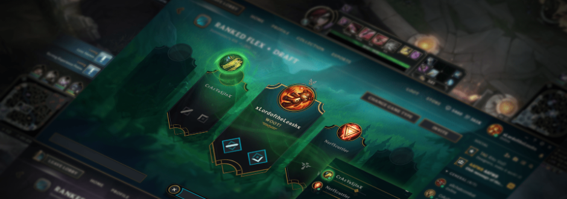

forte chuva que atingiu a cidade de São Paulo deixou as zonas Leste, Oeste, Sudeste, o Centro e as marginais Tietê e Pinheiros em estado de atenção para alagamentos na tarde deste domingo (21). Os bairros da Vila Madalena e de Pinheiros tiveram alagamentos, queda de árvores e uma forte enchente que chegou a arrastar carros.
Um dos pontos turísticos do bairro boêmio da Vila Madalena pelos diversos grafites que adornam seus muros, a Rua Gonçalo Afonso, conhecida como Beco do Batman, teve carros arrastados durante o temportal (assista no vídeo acima). Pedestres que passavam por lá também foram levados pela corrente de água.
Outro ponto de alagamento estava na Rua Paulo Gontijo de Carvalho, na esquina com a Rua Henrique Schaumann, em Pinheiros. No mesmo bairro, na Rua Potiguar Medeiros, o Corpo de Bombeiros foi acionado para resgatar duas vítimas no interior de veículos.
O Túnel Fernando Vieira de Melo teve uma de suas pistas fechadas por causa do alagamento, segundo a Companhia de Engenharia de Tráfego (CET).
Uma casa na Vila Madalena foi interditada após parte dela ruir. Ninguém se machucou.
A forte chuva também derrubou árvores em Pinheiros e nos Jardins. Uma delas, de grande porte, caiu sobre dois carros na Avenida Brasil. Não havia informações de feridos.
Perto dali, na Rua Estados Unidos, outro carro foi atingido por uma árvore. Os veículos que passavam pela via tiveram de usar a calçada para trafegar.
Na Rua Capote Valente, em Pinheiros, uma grande árvore caiu e bloqueou a rua. Não havia informações de feridos.
Segundo o Corpo de Bombeiros, foram registradas 18 quedas de árvores na cidade neste domingo.
Segundo o Centro de Gerenciamento de Emergências (CGE), da Prefeitura, áreas de instabilidade formadas pelo calor, a umidade e a entrada de uma brisa marítima causaram a chuva.
A Prefeitura Regional do Itaim Paulista, na Zona Leste, entrou em alerta após o Córrego Lajeado transbordar. O bairro voltou ao normal no início da noite.
Ruas e avenidas da região ficaram sob a água. Moradores usavam rodo para retirar a água do rio de dentro de suas casas.
O Túnel Águia de Haia, na Zona Leste, foi interditado devido a um alagamento, segundo a Companhia de Engenharia de Tráfego (CET).
O mês de março, definitivamente tem sido um mês especial no mundo do basquete. Na NBA, a reta final está a todo vapor, com uma disputa insana na Conferência oeste pelas vagas do pelotão de trás da zona de classificação para os playoffs. No basquete universitário americano, as loucuras de março deixaram o público boquiaberto com tantas zebras e arremessos no estouro do cronômetro. No Brasil, a edição 2018 do Jogo das Estrelas do NBB foi mais uma vez um imenso sucesso. Sem falar, é claro, no genial milagre protagonizado por Paulinho Boracini, armador do Basquete Cearense, diante do Bauru nesta quarta-feira. E pelo visto, os ares de um março mágico no mundo do basquete chegaram até mesmo na Islândia.
https://twitter.com/twitter/statuses/976444694241542145
Na terça-feira, no jogo 2 de um dos confrontos dos playoffs do campeonato nacional, uma cesta da quadra de defesa no estouro do cronômetro tirou a sanidade do locutor da partida. "Neeeeeeeiiiiiiii", gritou o narrador. Em português, seria algo como "Nããããããããooooooo!". A cesta valeu a vitória do Haukar (cabeça de chave número 1) sobre o Keflavik (cabeça de chave número 8). O Haukar abriu 2x0 na série contra o oponente.

Após um pequeno adiamento, finalmente foi disponibilizado o patch 8.6 de League of Legends trazendo o esperado recurso de chat por voz ingame. Anunciado tem alguns meses, o recurso estava em teste no PBE e agora foi disponibilizado oficialmente.
O chat de voz funcionará para qualquer grupo de dois ou mais jogadores. Assim que você entrar no grupo de um amigo, você se conectará automaticamente ao chat de voz e permanecerá conectado por todas as partidas que vocês jogarem juntos.
A conexão é automática desde o saguão e o jogador pode ajustar o volume da sua equipe dentro do jogo clicando no ícone de microfone na canto inferior da tela. Também é possível mutar automaticamente caso o jogador não queira usar o recurso. Claro que, para evitar abusos, a Riot planejou algumas limitações, e por isso só será possível usar o chat por voz estando em grupos pré-definidos.
E caso esteja se perguntando, por enquanto não planejamos expandir o League Voice a membros de equipe fora do seu grupo predefinido. Jogar com amigos normalmente cria um ambiente mais seguro do que jogar com estranhos, então até termos ferramentas melhores para ajudar a evitar situações abusivas com pessoas estranhas, não implementaremos a conversa por voz fora dos grupos predefinidos. Acreditamos que, mesmo diante das implicações sociais envolvidas em xingar seus amigos, tendo a possibilidade de expulsar gente do grupo e silenciar indivíduos em específico, os jogadores saberão lidar com os membros malcomportados.
Você confere todas as alterações do patch no site oficial. Lembrando que o próximo update já está em testes no PBE, trazendo enfim o esperado rework de Irelia. A Riot detalhou as mudanças no site oficial, divulgando inclusive um vídeo mostrando a jogabilidade. Você pode conferir abaixo, caso não tenha visto anteriormente.